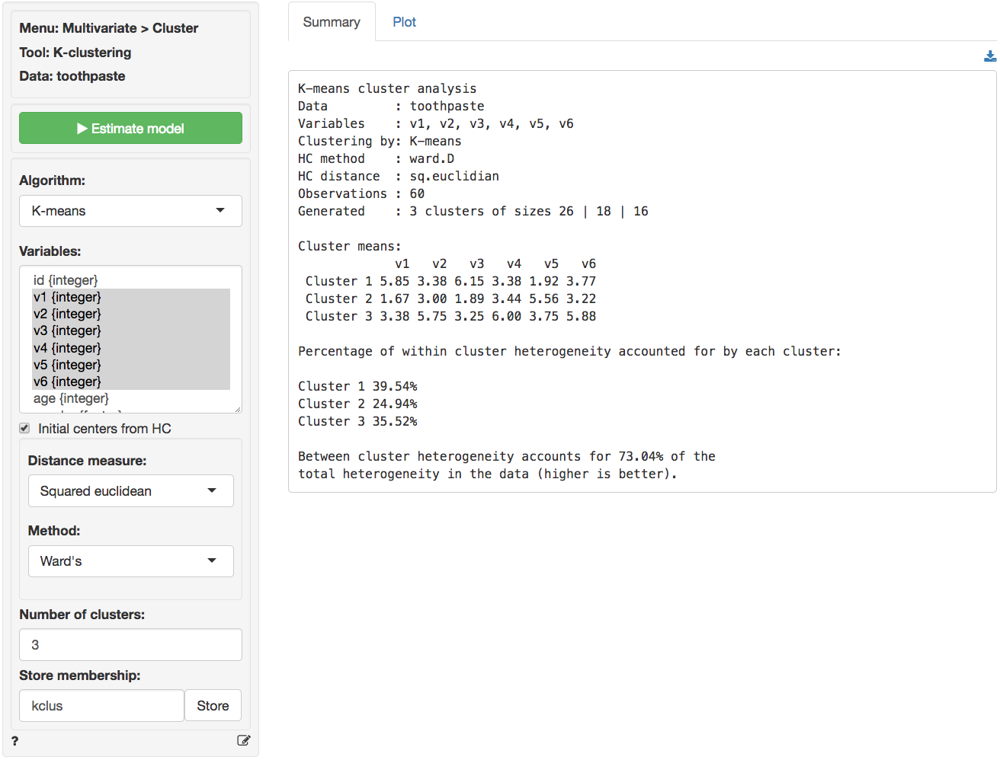
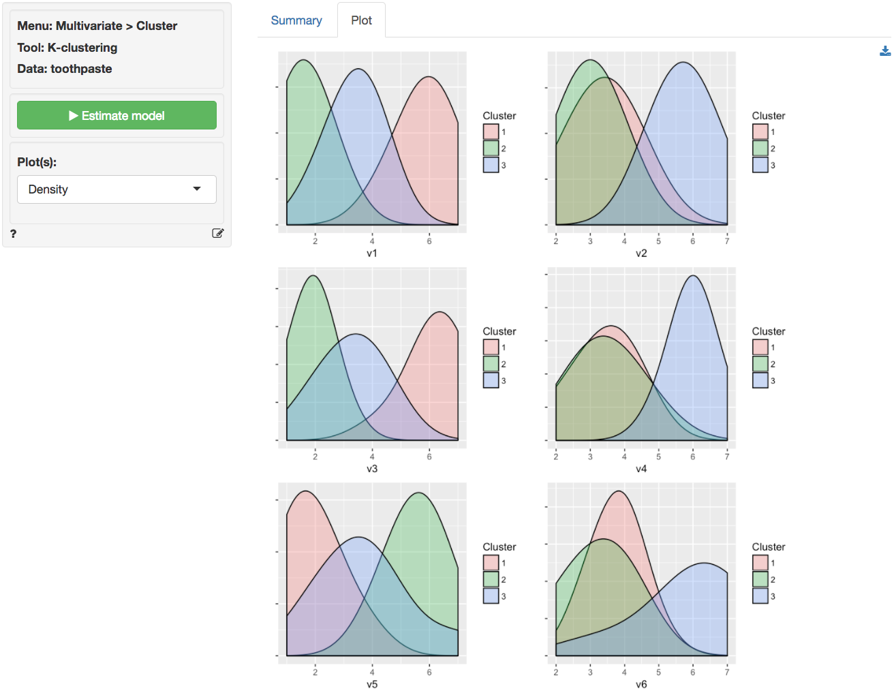
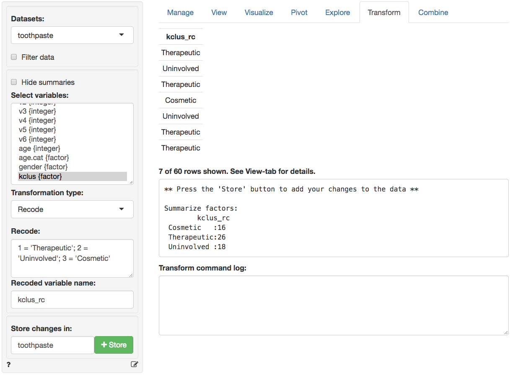
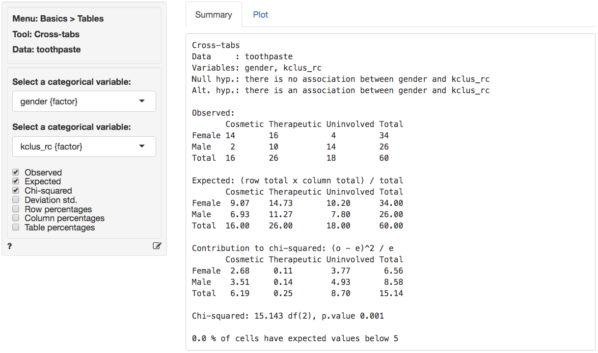
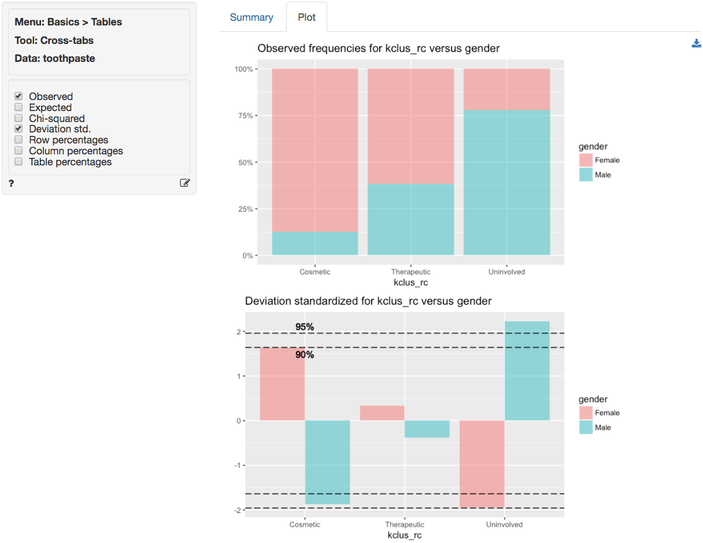

Multivariate > Cluster > K-clustering
Create segments using K-clustering
The goal of Cluster Analysis is to group respondents (e.g., consumers) into segments based on needs, benefits, and/or behaviors. The tool tries to achieve this goal by looking for respondents that are similar, putting them together in a cluster or segment, and separating them from other, dissimilar, respondents. The researcher compares the segments and provides a descriptive label for each.
Example: Toothpaste
First, go to the Data > Manage tab, select examples from the Load data of type dropdown, and press the Load button. Then select the toothpaste dataset. The dataset contains information from 60 consumers who were asked to respond to six questions to determine their attitudes towards toothpaste. The scores shown for variables v1-v6 indicate the level of agreement with statements on a 7-point scale where 1 = strongly disagree and 7 = strongly agree.
After determining the appropriate number of clusters to extract using Hierarchical cluster analysis we use K-clustering to create the final segments. The main advantage of this algorithm is it’s flexibility and robustness in finding the most appropriate grouping of respondents. For marketing and business data we often use Hierarchical cluster analysis to select the number of segments and K-clustering to create the final segments.
To apply K-clustering to the toothpaste data select K-means as the algorithm and variables v1 through v6 in the Variables box. Select 3 as the number of clusters. Because the data has relatively few observations we can use Hierarchical Cluster Analysis (HC) to provide the initial cluster centers. After the settings have been changed click the Estimate button or press CTRL-enter (CMD-enter on mac) to generate results.
In the Summary tab we use the Cluster means table to describe the individuals assigned to a segment. Each number in the table shows the average score on a variable for people in that segment. For example, segment 3 has an average score of 5.750 out of 7 on question v2. We are looking for either very high or very low mean values to help distinguish segments because we want to establish how one segment differs from the others. If there are no substantial differences in the mean value of a variable across different segments that variable is not very useful for interpretation. By highlighting the variables that most clearly distinguish the different segments we can generate a name or label that describes consumers in each segment and illustrates how the segments differ from one another.

It can be useful to visualize how well the segments are separated by plotting the data for each segment and variable. The figures shown below are density plots. For variable v1 the clusters are nicely separated. The average response to the question ‘It is important to buy a toothpaste that prevents cavities’ for segment 2 (green) seems lower than for both segment 3 (blue) and segment 1 (pink). Segment 1, in turn stands out with a higher score on this question compared to the other two segments. For question v4 we see a different pattern. The average response to the question ‘I prefer a toothpaste that freshens breath’ for segments 1 (green) and 2 (pink) is very similar and the plots overlap. Segment 3 (blue), in turn, stands out with a higher score on this question compared to the other two segments.

By reviewing the Cluster means table in the Summary tab and the density plots in the Plots tab we can derive the following labels: Segment 3 stands out with higher scores on questions v2, v4, and v6. We could call them the ‘Cosmetic brushers’. Segment 1 stands out with higher scores on questions v1 and v3 and a lower score on v5. They seem to care most about the health benefits of toothpaste so we might call them the ‘Therapeutic brushers’. Segment 2 scores lower in v1 and v3 and higher on v5, i.e., they seem to care little about the health benefits of toothpaste. Since their scores for the cosmetics benefits are middle-of-the-road we could label them the ‘Uninvolved brushers’. To save the table of cluster means to a csv file press the download button on the top-right of your screen.
Once we categorize the segments we can create a segment (or cluster) membership variable by clicking the Store button. A new variable is added to the toothpaste data showing which respondents were assigned to each cluster (i.e., cluster membership). We can change the created cluster variable to show the descriptive labels above through the Data > Transform menu. Select the kclus variable in the Select column(s) box. Then select Recode from the Transform type dropdown. In the recode box type (or paste) the command below and press return:
This should produce the output shown below. After verifying the results are as expected, click the Store button to add the recoded variable to the toothpaste dataset.

We can profile these segments with demographic data using cross-tabs (e.g., gender vs segment membership). Go to Basics > Tables > Cross-tabs. Our null hypothesis and alternative hypothesis are:
H0: There is no relationship between gender and segment membership
Ha: There is a relationship between gender and segment membershipIn the Summary tab we see there is a significant association between these two variables. The p.value is .001 and there are no cells with expected values below 5 (see the help file for Basics > Tables > Cross-tabs for a detailed discussion).

For a graphical depiction of the association go to the Plot tab. If we select Deviation std. we see that the Uninvolved segment has significantly more men than we would expect under the null of no-association. We could also argue that there are more women in the Cosmetic segment than we would expect under the null of no-association, although the significance level is marginal (i.e., < .1 but not < .05). In sum, in these data men seem more likely to belong to the Uninvolved brushers segment and women seem (marginally) more likely to be in the Cosmetic brushers segment.

Additional options
- By default, data will be standardized before it is analyzed. To pass data in its raw form to the estimation algorithm, make sure the
Standardizebox is un-checked - If the data to use for clustering includes variables of type “factor”, the
K-protoalgorithm should be used. IfK-meansis selected, only numerical variables with be retained for analysis. For more information on thekprotofunction and the clustMixType R-package see the R-journal article
Report > Rmd
Add code to Report > Rmd to (re)create the analysis by clicking the icon on the bottom left of your screen or by pressing ALT-enter on your keyboard.
If a plot was created it can be customized using ggplot2 commands or with patchwork. See example below and Data > Visualize for details.
R-functions
For an overview of related R-functions used by Radiant to conduct cluster analysis see Multivariate > Cluster.
The key function from the stats package used in the kclus tool is kmeans.